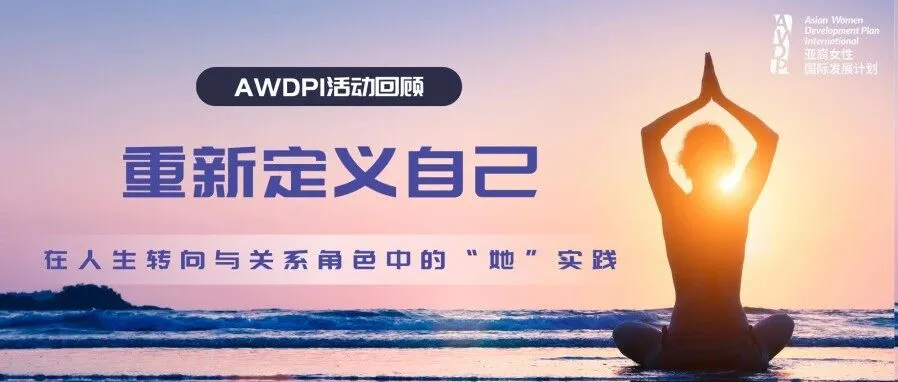
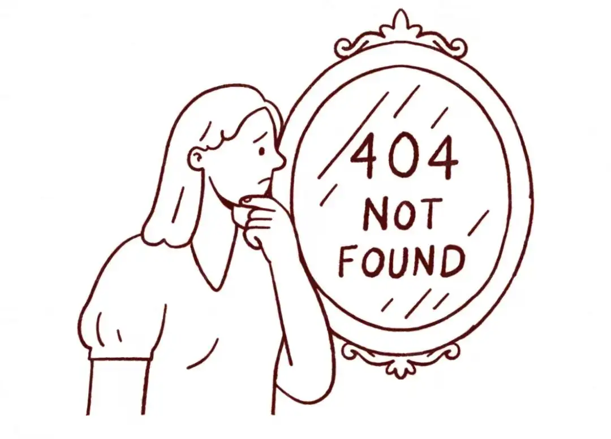
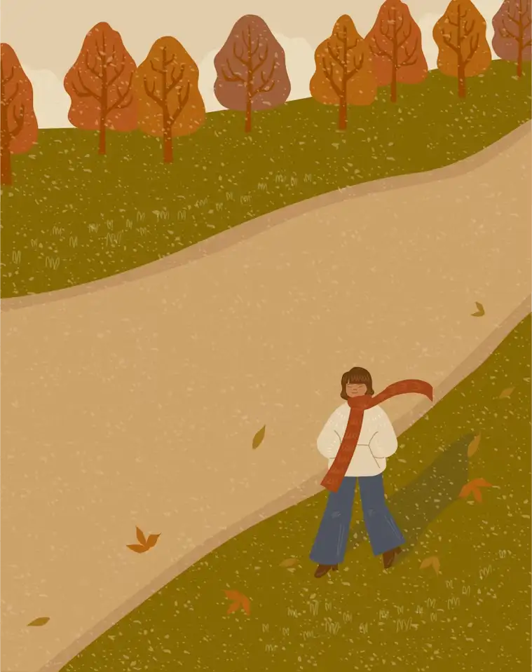
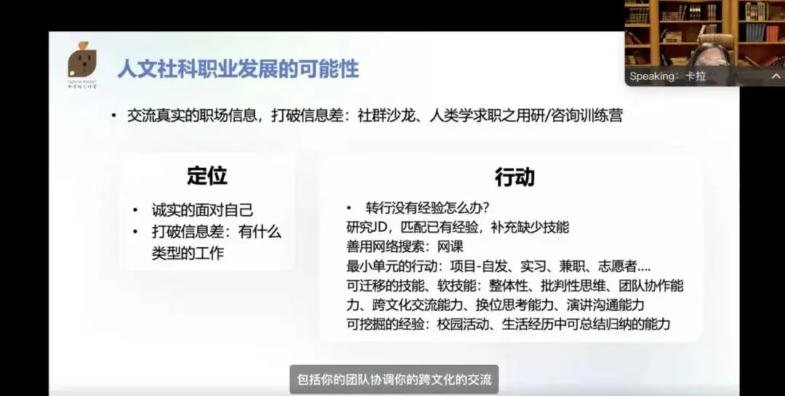
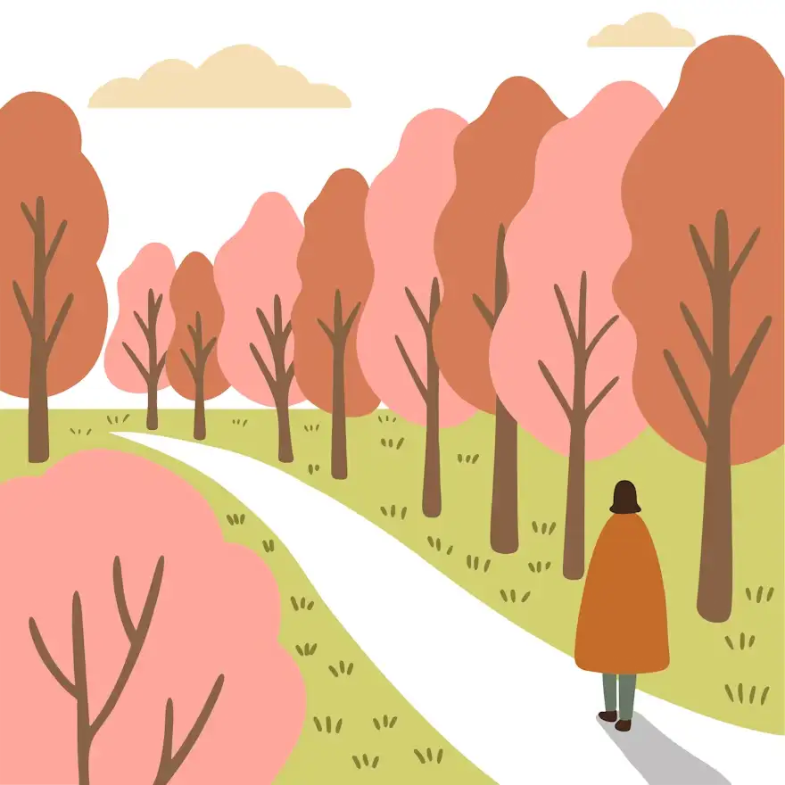
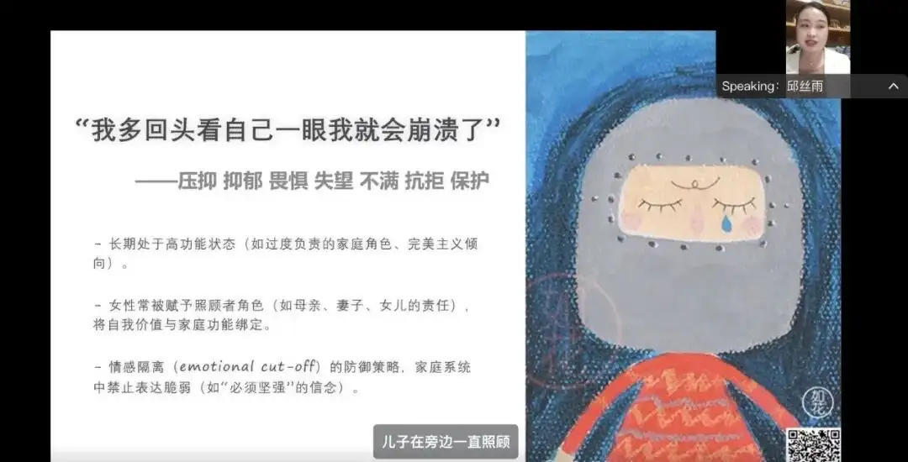
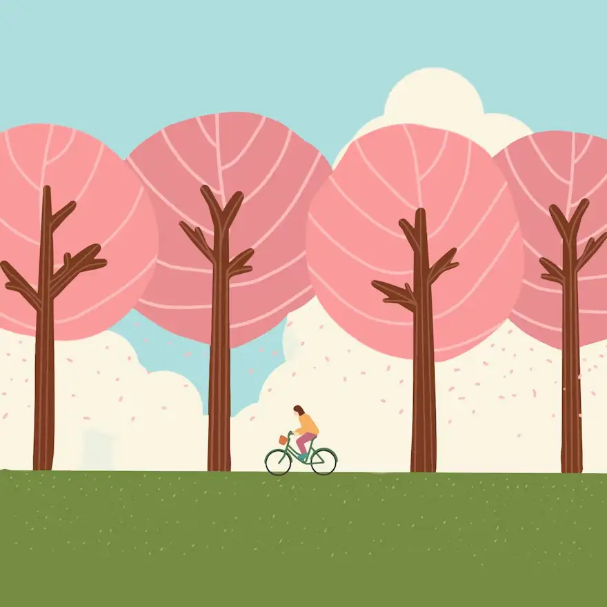
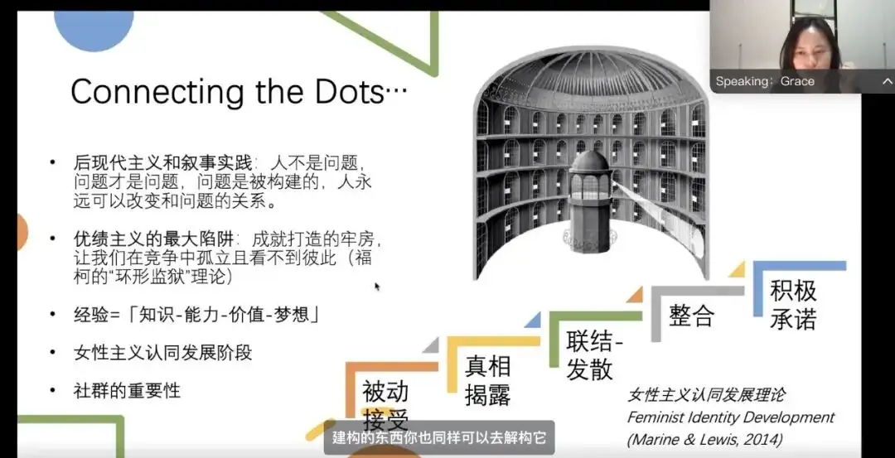
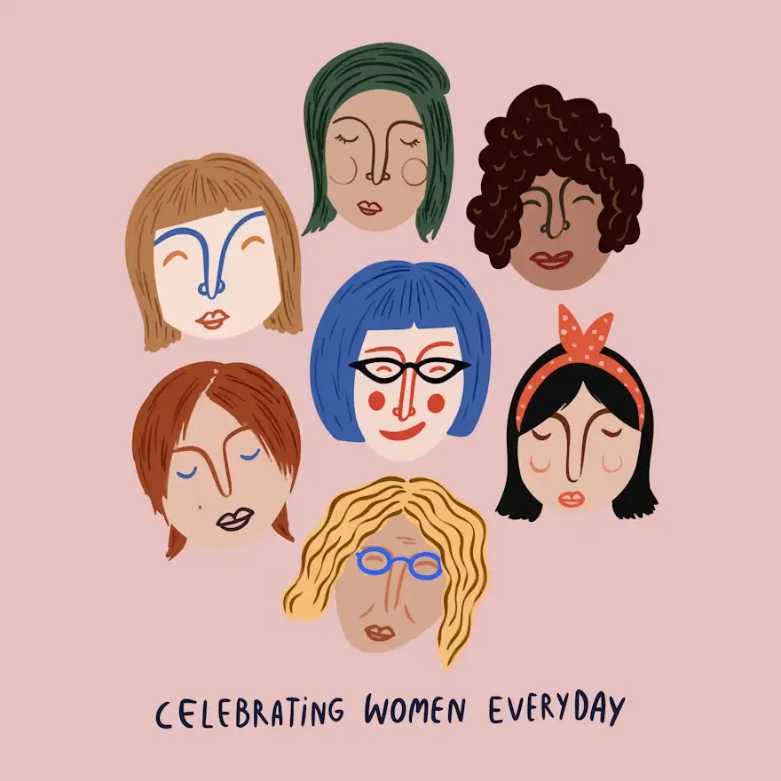
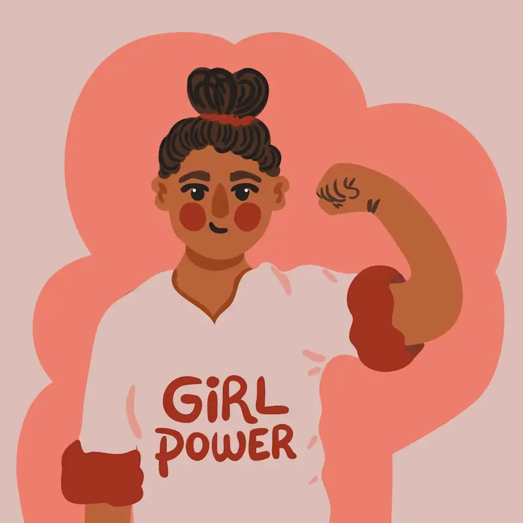

“你的人生，是不是也曾停在一个‘别人都说不错’的位置，却始终觉得哪里不对劲？”

在主流叙事中，我们被教导要走 「对的路 」：考好学校，进大公司，成为值得骄傲的女儿、伴侣、同事。但当这些“标准成功”不再带来真实的满足，当我们在关系中感到窒息、在选择中迷茫，女性该如何重新定义自己？
2025年9月6日，AWDPI海外华人女性保护项目发起讲座「重新定义自己：在人生转向与关系角色中的‘她’实践」，邀请三位来自心理学、人类学、咨询行业的优秀女性，围绕职业转型、亲密关系、自我叙事三个维度展开真诚分享。


分享嘉宾
一
卡拉
独立人类学研究者与策划人、卡皮拉工作室主理人、复旦大学人类学硕士、
荷兰莱顿大学遗产研究硕士
《干一行厌一行，不如自己创一行：一位人类学研究者的一人公司之路》

从学术出发的质疑与转向：
人文社科的工具化与价值冲突
卡拉以一段正式的自我介绍展开分享，回顾了自己从学术到职场、从迷茫到自创工作室的探索之路。她在本科到博士阶段一直专攻人类学，最初对学术充满热情，但在攻读博士阶段逐渐意识到---我们所写的论文似乎只是用华丽的措辞包装了大众早已熟知的事实。 长期的困惑让她开始反思学术研究是否真的能够带来实际影响，这一点成为她人生道路的转折点。
为了探索学术领域之外的发展方向，她曾在设计公司、爱奇艺、vivo等公司担任用户研究员。尽管这些工作让她体会到研究的“实用性”，但也揭示出一些结构性问题——研究往往被边缘化，只被用来为决策“背书”，甚至违背了个人伦理（例如引导青少年沉迷游戏等），这让她意识到，她说：“我不愿意成为一个只会制作PPT的“工具人”。
转向艺术与公共表达：
重启人生可能性
离开大型企业后，卡拉重新回到她热爱的博物馆与艺术领域，并计划前往荷兰攻读遗产研究硕士。在等待出国的过程中，她参与了艺术家驻地项目，首次接触到“艺术家的实地调研”。这似乎为她提供了另外一条路：不一定要成为一名艺术家，而可以用人类学的方式参与到创作过程中。
在荷兰，她与一位从事身体戏剧的女性共同组织了一个工作坊，通过身体表达探讨“什么是Chinese”，并与当地东亚女性群体展开了深入交流。她惊喜地发现：即使没有依赖现有系统，她也能够做出有意义的事情。“以前我从未想过，原来真的有人会被我所做的事情打动，甚至当场感动到泪流满面。”
人文社科的公共路径：
如何平衡价值与生存
回国后，她开始尝试运用更多的媒介进行“研究”。她创建了公众号和小红书账号，分享人文与设计领域的内容，并启动了多个实验性项目，例如生态叙事桌游、读书会社群、论文共创集、展览与深度田野体验、生态村庄实践活动等。
在讲座的最后，卡拉也回答了观众普遍关心的“如何维持生计”的问题。她坦言，尽管目前大多数项目都具有公益性质，但她已经找到了适合自己的平衡方式，其中包括商业路径，如研学课程、社区文化报告、展览活动等。尽管收入远不及大型企业，但她愿意以低消费的生活方式来换取创作空间的自由。她坚持“兴趣驱动+用户需求+可持续性”的评估机制，以免受市场的左右。

对正在迷茫未来的文科生，她提出了四点建议：
1
诚实面对自己：想赚钱并不羞耻，适合稳定上班也没问题，关键是找到真实的排序。
2
打破信息差：多关注行业案例与岗位信息，探索自己不了解的可能性。
3
以最小单元试错： 从兼职、志愿、短期项目开始，用行动测试兴趣与能力。
4
看见可转化能力：批判性思维、沟通协调、文化理解 等“软技能”才是文科生真正的宝藏。
分享嘉宾
二
邱丝雨
英国爱丁堡大学精神健康心理学硕士、AWDPI心理处负责人、「茉生人」全球华人公益心理咨询师网络创始人
《我看见妳了——我不想看见我自己》：关于关系、困境与“觉醒”的心理对话

女性为何“看不见自己”？：
社会性别的期待
❝ 为什么我的分享题目是“我看见妳了——我不想看见我自己”？ ❞
丝雨分享称，这是她在咨询过程中最常听到女性来访者的真实表达——她们在关系中全力以赴“看见别人”，却常常害怕回望自己。她指出：“看不见自己”是一种长期压抑后的心理保护机制，也是社会性别角色期待的产物。
丝雨引用了《Barbie》电影中广为流传的一段台词：“你必须瘦，但不能说你想瘦……你必须当老板，但不能太强势……你要保持感恩，但这个体系是不公平的……” 她指出，这不是个人的问题，而是整个文化系统长期对女性的影响。面对这些矛盾，我们要做的不是压抑情绪，而是首先允许自己： “我可以有不同的想法”。
家庭与亲密关系：
女性的自我忽略与情绪付出
在讲座第二部分，丝雨聚焦女性在伴侣与亲密关系中的角色困境。她指出，很多女性在关系中承担过多情绪劳动，却往往得不到等量的回应，甚至习惯性自我忽略、压抑需求。
在家庭层面，她通过家庭良知与代际忠诚的心理概念，揭示了女性在原生家庭中情感角色的错位。家庭良知代表着祖祖辈辈传承下来的价值规范与牺牲美学，在这个框架之下，照顾者、牺牲者、和事佬角色往往默认由女性承担。在外工作努力的同时，她们还要维持家庭关系，高度职能状态下的情感隔离使许多女性负担过重，却无法真实表达内心情感。
在亲密关系层面，她指出，在伴侣关系中，女性往往成为关系的维系者。她们投入更多情绪劳动，却得不到对等回报。而女性在一段关系破裂后，更易陷入破产式补偿心理。她强调，关系是两个人共同经营的，不是某一方的情绪救赎场。并鼓励女性思考：“除了你自己，生命中还有什么值得你努力？”
“她”如何重塑自我？：
选择的权利和勇气
丝雨用心理学中的“自我分化”理论说明：真正的成长不是切断关系，而是建立边界，在忠诚与自我之间找到平衡。自我分化意味着情绪上的独立，不再被“必须要”的声音裹挟。她特别强调，自我分化不等于断绝联系，而是建立新的边界与关系动态。“我依然爱我的家人，但我可以有我自己的生活方式。”

在讲座尾声，丝雨邀请大家进行“时光机祝福练习”： 写下过去重要节点上的自己，问问她：“我现在想对你说什么？我愿意为你祝福什么？”
通过这种方式，让女性学会与过去的自己对话、共处，并理解过去的自己。她强调：“选择，是力量的开始。” 无论是保留现状，还是迈出新步伐，都应是出于“我想”而非“我必须”。
分享嘉宾
三
Grace
弗吉尼亚大学心理学与经济学双学位、叙事治疗心理咨询师（1300+ 小时咨询经验）、Dodo｜渡空间创始人、「流径源心」身心实践社群主理人
《三十而已：从职场精英到个人事业，关于转型的探索与反思》

从线性成功走向内在召唤：
精英女性的探索与转型
Grace 的成长路径几乎是标准答案：美国弗吉尼亚大学心理学与经济学双学位，毕业后迅速进入一线管理咨询公司，后又转战科技创业公司，参与数千万级项目。对外她是“靠谱”“专业”“能打”的精英代表。然而，长年累积的高压状态与成就感缺席让她开始反思——自己拼命维系的，究竟是真实的渴望，还是他人期待的样子？
在工作之外，她悄悄写小说、上写作课，还偷偷报了心理咨询入门课程。叙事治疗课程让她发现：我们对自己人生的理解，其实是被设计好的故事。她意识到，原来“精英”也是一种叙事框架，我们并非真的自由选择，而是早被灌输了什么是有价值的人生。于是，她开始逐渐放下头衔、放下KPI、放下时间焦虑，走入“模糊”之中。
在模糊中创造结构：叙事疗愈与社群实践
Grace 在叙事治疗中学习的第一个理念是：“问题不是你，问题是问题。你与问题的关系可以改变。” 她认为主流文化下的“标准人生剧本”并不适用于每一个人，而我们需要创造出属于自己的叙事空间。
为了帮助更多人重写人生剧本，Grace 开发了多个简单却有力的叙事与具身探索工具。第一个是生命地图 Life Map。用户 通过绘制人生关键节点（转折、创伤、突破、失落），分析支撑自己度过难关的“隐藏资源”，重新发现自己一直有的力量。第二个是职业叙事卡牌，通过抽出“声音卡”区分内在渴望 vs. 他人期待，再用“象征卡”讲述自己真实想过但不敢说的职业梦想。通过和自己的对话，用户得以打破“稳定 vs. 成功”的二元陷阱。
Grace 还通过身体记忆工作坊，帮助参与者释放沉积的情绪与压抑的声音。她指出，女性长期被训练为“情绪管理者”与“关系维系者”，但却缺乏表达自身欲望与痛感的空间，而这些活动正是为此而生。
女性叙事与结构反思：
从“自我责备”到“结构批判”
Grace 揭示了她在咨询中频繁遇到的女性共性困境：在亲密关系中无法提出要求，担心破坏关系；在职场中过度自我要求，怕不被当回事、对自己效率不够高的时刻感到羞耻；经常说 “是不是我哪里不够好？”。她指出，这些都不是“个体性格问题”，而是社会对女性的叙事限制所致。

她结合来访者的成长路径，总结出女性叙事的五个发展阶段：
被动接受阶段
遵循标准剧本，不觉察困境
觉察不公阶段
产生怀疑，但未必有表达空间
愤怒觉醒阶段
开始反抗，却容易内耗
经验整合阶段
理解过往经验，重新建构意义
积极承诺阶段
以创造影响为目标，支持他人
Grace 最后强调，讲述自己的故事不只是心理修复，更是一种社会实践。她认为，“疗愈”不再是个人的静默努力，而是女性互为见证的公共行动。
在三位讲者的生命叙事中，我们看到的是框架的撕裂、角色的松动、边界的重建，也是女性在时代裂缝中生长出的新实践。
她们告诉我们：“走出一条不确定的路，远比走完一条确定的路更值得。”
在亲密关系中敢于表达需求，在职业转型中听见内心召唤，在生活剧本中重新写下自己的名字——这正是“她”实践的意义。

撰稿｜龙瑶
图片｜unsplash
排版&封面｜张景阳